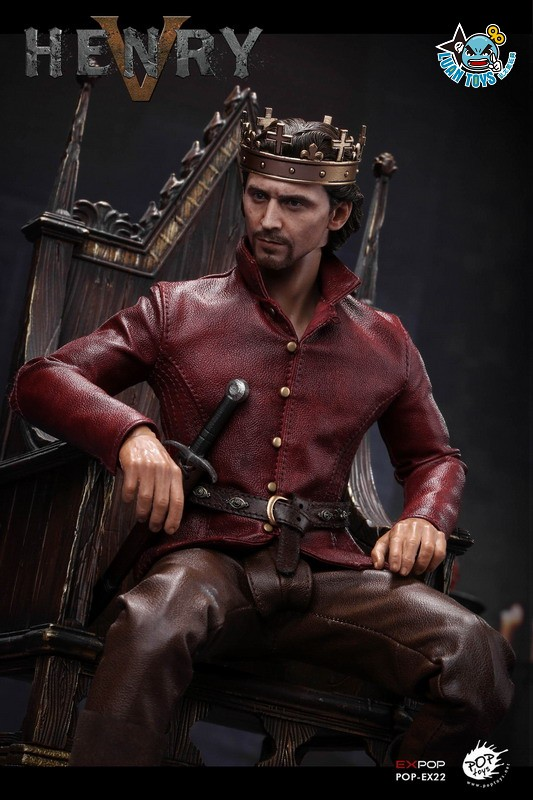

英格蘭蘭開斯特王朝國王（1413年—1422年在位）。在他短暫的九年統治期間，他取得了中世紀任何一位英格蘭國王都未取得過的軍事輝煌。
亨利五世是英王亨利四世之子，母為瑪麗·德·伯翰。生於蒙茅斯（在威爾斯）。在他出生時他父親還只是德比伯爵。當德比伯爵被放逐期間，亨利被國王理查二世收養，並得到很好的教育。德比伯爵篡位後，即封亨利為威爾斯親王。1413年3月20日，亨利五世加冕為英格蘭國王。
亨利五世重燃百年戰爭戰火，而他甚至取得了比愛德華三世更大的勝利。當時法國內部矛盾重重：國王查理六世長期患精神病；兩大貴族集團奧爾良派與勃艮第派流血衝突。亨利五世一一加以利用。實際上，他使勃艮第公爵無畏的約翰背叛自己的國家轉而支持英國。
1415年亨利五世正式侵入法國。事實證明，他是比愛德華三世更善於發揮英格蘭長弓手威力的指揮官。他首先攻下勒阿弗爾，繼而向沿海重鎮加來進軍。在這期間，亨利五世宣稱他要得到法國的王冠。以少勝多的阿金庫爾戰役（1415年）幾乎摧毀法國人的鬥志。此後英軍不斷取勝，1419年全部征服諾曼第，隨即法國北部第一重鎮魯昂投降。
1420年亨利五世迫使查理六世簽訂特魯瓦條約。這份條約對英格蘭來說是難以置信的巨大勝利：條約規定，亨利五世與查理六世的女兒瓦盧瓦的凱薩琳（法語讀卡特琳）結婚，並且查理六世死後其法國王位由亨利五世繼承（剝奪了法國王太子查理的繼承權）。亨利五世實際成為法國的攝政。
此時的亨利五世可謂青雲得意，然而1422年在萬塞訥附近的一次戰鬥中，亨利五世死於斑疹傷寒。
莎士比亞
《亨利五世》（Henry V）是英國劇作家威廉·莎士比亞創作的一部歷史劇，據考證作於1599年。故事基於英格蘭亨利五世國王的人生，著重描寫百年戰爭期間阿金庫爾戰役的前後事件。
該劇本是四部曲的最後一部，前面三部為《理查二世》、《亨利四世第一部》和《亨利四世第二部》。原來的觀眾已經在《亨利四世》中熟悉了這個角色，被描述成一個放蕩的難以控制的王子亨利。在《亨利五世》中，年輕的王子成長為成熟男人，致力於征服法國。
和莎士比亞大部分編年史歷史劇相同，《亨利五世》的原始資料來源為拉斐爾·霍林斯赫德所著的1587年第二版的《英格蘭、蘇格蘭和愛爾蘭編年史》。看起來他還查閱了愛德華·霍爾所著的《The Union of the Two Illustrious Families of Lancaster and York》，學者認為莎士比亞熟悉塞繆爾·丹尼爾關於玫瑰戰爭的詩。
轉自:維基百科